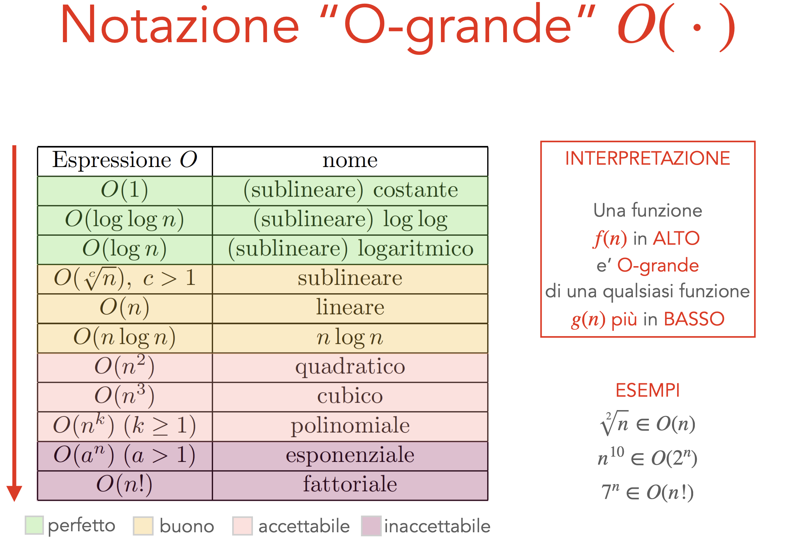

Ripasso
Problema Computazionale
Un problema computazionale Π è una questione generale che dipende da parametri i cui valori non sono specificati. Si definisce tramite:
- INPUT: insieme $I$ di possibili assegnamenti ai parametri
- OUTPUT: insieme $S$ di possibili soluzioni
- Funzione: $Π : I → S$
Un'istanza del problema si ottiene assegnando valori specifici ai parametri. Per esempio, definisco il problema "Ordinare una sequenza di numeri" e un'istanza del problema può essere "Ordinare la sequenza {5, 2, 9, 1}".
Classificazione dei Problemi per Tipo di Soluzione
I problemi si classificano in base al tipo di soluzione cercata:
-
Problemi Decisionali: la risposta è binaria (SÌ/NO)
- Esempio: "Il numero $x$ è primo?" o "Esiste un cammino da A a B di lunghezza $\le K$?"
-
Problemi di Ricerca: cerchiamo una soluzione che soddisfi certe proprietà.
- Esempio: "Trovami un cammino da A a B".
-
Problemi di Ottimizzazione: Cerchiamo la soluzione migliore (minimo costo o massimo guadagno) tra tutte quelle ammissibili.
- Esempio: "Trovami il cammino più breve da A a B".
Algoritmi
Un algoritmo è una procedura generale per risolvere un problema definita tramite una sequenza di passi finita, ben ordinata, non ambigua, effettivamente realizzabile e che termina in tempo finito.
Un algoritmo per il problema Π è corretto se, per ogni istanza $i ∈ I$, produce la soluzione corrispondente $Π(i) ∈ S$.
Due proprietà chiave: - Correttezza: L'algoritmo deve terminare e produrre l'output corretto per ogni istanza valida - Efficienza: Misuriamo quanto "costa" l'algoritmo in termini di risorse (indipendentemente dalla macchina). - Tempo: Numero di operazioni - Spazio: Numero di celle di memoria
Dimensione del Problema
La dimensione misura la quantità di informazione necessaria per specificare l'istanza:
- Criterio di costo logaritmico: numero di bit necessari per rappresentare l'input
- Criterio di costo uniforme: numero di "elementi" necessari per rappresentare l'input
Analisi Asintotica
Non misuriamo il tempo in secondi, ma in numero di operazioni elementari in funzione della dimensione dell'input ($n$).
-
Caso Peggiore (Worst Case): Il tempo massimo richiesto per un input di dimensione $n$. È la garanzia che diamo.
-
Notazioni:
- $O(f(n))$: Limite superiore (non va peggio di così).
- $\Omega(f(n))$: Limite inferiore (serve almeno questo tempo).
- $\Theta(f(n))$: Ordine di grandezza esatto (limite superiore e inferiore coincidono).

Classificazione dei Problemi per Difficoltà
In base al costo computazionale, i problemi si classificano in:
-
Problemi Trattabili (facili, classe P): Esiste un algoritmo che li risolve in tempo polinomiale (es. $O(n), O(n^2), O(n \log n)$) $$ T(n) ∈ O(n^k), k ≥ 0 $$
- Esempi: Ordinamento, Cammino Minimo (Dijkstra), Spanning Tree.
- Perché: Se raddoppio l'input, il tempo aumenta di un fattore gestibile.
-
Problemi Presumibilmente Intrattabili (difficili): non abbiamo un algoritmo di costo polinomiale, ma non è stato dimostrato che non esista
-
Problemi Intrattabili: si può dimostrare che non esiste un algoritmo di costo polinomiale. Il costo è esponenziale (es. $O(2^n), O(n!)$).
- Esempi: Tutti i possibili sottoinsiemi, tutte le permutazioni (TSP forza bruta), Torre di Hanoi.
- Perché: Basta aggiungere un piccolo elemento all'input (es. una città in più nel TSP) e il tempo di calcolo raddoppia o peggio. Diventa inutilizzabile molto presto.
-
Problemi Irrisolvibili: si può dimostrare che non esiste alcun algoritmo risolutivo (indipendentemente dal costo)
- Esempio: Problema della fermata (dato un algoritmo A con input D, l'esecuzione di A con input D termina in tempo finito?)
Perché il Polinomiale è la Soglia di Trattabilità?
I problemi trattabili sono quelli di costo polinomiale perché:
- Esistono pochi problemi trattabili con algoritmi polinomiali di grado alto
- In molti problemi, lo spazio delle soluzioni è esponenziale: trovare un algoritmo polinomiale significa "fare meglio" di un algoritmo di forza bruta
- Le istanze worst case sono spesso rare o poco probabili
- Costi peggiori del polinomiale diventano rapidamente intrattabili al crescere della dimensione delle istanze
- È una misura indipendente dal progresso tecnologico
DOMANDA: l’appartenenza dei problemi a queste classi di problemi, non potrebbe dipendere dal modello di calcolo?
Tesi di Church-Turing
Modelli di calcolo diversi, ma ragionevoli, si possono simulare a vicenda con uno slowdown polinomiale. Sono tutti polinomialmente equivalenti alla Macchina di Turing.
Le classi di problemi non cambiano cambiando modello di calcolo, purché quest'ultimo sia ragionevole.